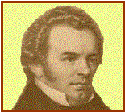

Franz Peter SCHUBERT

|
Nace: 31-enero-1797 en Viena |
Muere: 19-noviembre-1828 en Viena |
||
|
 |
Nació en el seno de una familia
humilde. Eran 14 hermanos y apenas tenían recursos, su padre era maestro. Por
otra parte era un niño tímido y poco favorecido, pero su talento musical
apareció pronto. Ya con 10 años componía música para su parroquia. Con 11
años consigue una beca para el colegio imperial y real de Viena. Con 16 años
escribe su primera sinfonía para la orquesta del colegio. Regresa a su casa
para ayudar a su padre con las clases. Aunque no le fue muy bien, es la época
en la que escribe mas obras (unas 400). En 1817 abandona la enseñanza y se
dedica de lleno a la música, eligiendo una vida bohemia en el centro de
Viena. En 1828 da su único concierto en público y es ignorado por la crítica.
Murió de una fiebre tifoidea |
Obras principales: Sinfonías: -Nº
4 en Do menor, “Trágica”, D 417. -Nº
5 en Si bemol, D 485. -Nº
6 en Do, D 589. -Nº
7 en Mi, D 729. -Nº 8 en Si menor, “Inacabada”, D 759. -Nº
9 en Do, “la Grande”, D 944. Para piano: -12
valses, D 145. –36 valses, D 365 (Nº 1) -21
sonatas (Nº 6 en Mi
bemol, D 568; Nº 21 en
Si bemol, D 960). -Fantasía en Do “El caminante”. -Gran
Dúo en Do, D 812. -Momentos
musicales, D 780 (Nº 1, Nº 2,
Nº 3, Nº 4,
Nº 5 y Nº 6) Música de cámara: -15
cuartetos para cuerda. -11
Impromptus. (Nº 1,
Nº 2, Nº 3,
Nº 4) -Trío
con piano Nº 1 y Nº 2, D 898 y 929. -Quintetos,
Melodía húngara, Octeto en Fa
(2º Mov.). Otros: -7
misas (Kyrie de la
Misa Nº 2 en Sol D167), Oratorio “Lazarus”, unos 600 Lieder
(Die Forelle, Gretchen
am spinnrade, L’Abeille)
|
|
|
Podemos encuadrar a
este autor dentro del ROMANTICISMO |
|||